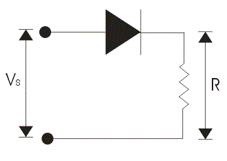
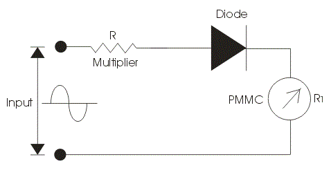

Full Wave Rectifier Circuits of Rectifier Type Instruments
Advantages of Rectifier Type Instruments
Rectifier type instrument measures the alternating voltage and electric current with the help of rectifying elements and permanent magnet moving coil type of instruments. However the primary function of rectifier type of instruments work as voltmeter. Now one question must arises in our mind why we use rectifier type of instruments widely in the industrial world though we have various other ac voltmeter like electrodynamometer type instruments, thermocouple type instruments etc? The answer to this question is very simple and is written as follows.
(a) Cost of electrodynamometer type of instruments is quite high than rectifier type of instruments. However rectifier type of instruments as much accurate as electrodynamometer type of instruments. So rectifier type of instruments are preferred over electrodynamometer type instruments.
(b) The thermocouple instruments are more delicate than the rectifier type of instruments. However thermocouple type of instruments is more widely used at very high frequencies.
Before we look at the construction principle and working of rectifier type instruments, there is need to discuss in detail about the voltage electric current characteristics of ideal and practical rectifier element called diode.
Let us first discuss the ideal characteristics of rectifying element. Now what is an ideal rectifying element? A rectifying element is one which offers zero resistance if it is forward biased and offers infinite resistance if it is reversed biased. This property is used to rectify the voltages (rectification means to convert an alternating quantity into direct quantity i.e. ac to dc). Consider the circuit diagram given below.
diode rectifier" width="329" height="233" class="alignright size-full wp-image-8746" />
In the given circuit diagram the ideal diode is connected in series with the voltage source and load resistance. Now when we make the diode forward biased it conducts perfectly offering zero electrical resistance path. Thus behaves as short circuited. We can make the diode forward biased by connecting the positive terminal of the battery with anode and negative terminal with cathode. The forward characteristic of rectifying element or diode is shown in the voltage electric current characteristic. Now when we apply negative voltage i.e. connecting the negative terminal of the battery with the anode terminal of the diode and positive terminal of the battery to the cathode terminal of the diode. Due to reverse biased it offers infinite electrical resistance and thus it behaves as open circuit. The complete voltage electric current characteristics are shown below.
diode characteristics" width="302" height="303" class="size-full wp-image-8750" /> Ideal Diode Characteristics
Let us again consider the same circuit but the difference is here we are using the practical rectifying element instead of ideal one. Practical rectifying element is having some finite forward blocking voltage and high reverse blocking voltage. We will apply the same procedure in order to obtain the voltage electric current characteristics of practical rectifying element. Now when we make the practical rectifying element forward biased it does not conduct till the applied voltage is not greater the forward breakdown voltage or we can say knee voltage. When the applied voltage becomes greater than the knee voltage then diode or rectifying element will come under conduction mode. Thus behaves as short circuited but due to some electrical resistance there is voltage drop across this practical diode. We can make the rectifying element forward biased by connecting the positive terminal of the battery with anode and negative terminal with cathode. The forward characteristic of practical rectifying element or diode is shown in the voltage electric current characteristic. Now when we apply negative voltage i.e. connecting the negative terminal of the battery with the anode terminal of the diode and positive terminal of the battery to the cathode terminal of the rectifying element. Due to reverse biased it offers finite resistance and the negative voltage till the applied voltage becomes equal to reverse break down voltage and thus it behaves as open circuit. The complete characteristics are shown below
diode characteristic" width="382" height="301" class="size-full wp-image-8753" /> Practical Diode Characteristic
Now rectifier type of instruments uses two types of rectifier circuits:
Half Wave Rectifier Circuits of Rectifier Type Instruments
Let us consider a circuit given below in which the rectifying element is connected in series with sinusoidal voltage source, permanent magnet moving coil instrument and the multiplier resistor.

The function of this multiplier electrical resistance is to limit the electric current drawn by the permanent magnet moving coil type of instrument. It is very essential to limit the electric current drawn by the permanent magnet moving coil instrument because if the electric current exceeds the electric current rating of PMMC then it destructs the instrument. Now here we divide our operation in two parts. In first part we apply constant dc voltage to the above circuit. In the circuit diagram we are assuming the rectifying element as ideal one. Let us mark the resistance of multiplier be R, and that of permanent magnet moving coil instrument be R1.The dc voltage produces a full scale deflection of magnitude I=V/(R+R1) where V is root mean square value of voltage. Now let us consider second case, in this case we will apply ac sinusoidal ac voltage to the circuit v=Vm*sin(wt) and we will get the output waveform as shown. In the positive half cycle the rectifying element will conduct and in the negative half cycle it does not conduct. So we will get a pulse of voltage at moving coil instrument which produces pulsating electric current thus pulsating electric current will produce pulsating torque. The deflection produced will corresponds to the average value of voltage. So let us calculate the average value of electric current, in order to calculate the average value of voltage we have integrate the instantaneous expression of the voltage from 0 to 2 pi. So the calculated average value of voltage comes out to be 0.45V.Again we have V is root mean square value of current. Thus we conclude that the sensitivity of the ac input is 0.45 times the sensitivity of dc input in case of half wave rectifier.
Half Wave Rectifier Waveform
Full Wave Rectifier Circuits of Rectifier Type Instruments
Let us consider a circuit given below.
Full Wave Bridge Rectifier
We have used here a bridge rectifier circuit as shown. Again we divide our operation into two parts. In the first we analyze the output by applying the dc voltage and in another we will apply ac voltage to the circuit. A series multiplier resistance is connected in series with the voltage source which has the same function as described above. Let us consider first case here we applying dc voltage source to the circuit. Now the value of full scale deflection electric current in this case is again V/(R+R1), where V is the root mean square value of the applied voltage, R is the resistance of the resistance multiplier and R1 which is the electrical resistance of the instrument. The R and R1 are marked in the circuit diagram. Now let us consider second case, in this case we will apply ac sinusoidal voltage to the circuit which is given v=Vmsin(wt) where Vm is the peak value of the applied voltage again if we calculate the value of full scale deflection electric current in this case by applying the similar procedure then we will get an expression of full scale electric current as .9V/(R+R1).Remember in order to obtain the average value of voltage we should integrate the instantaneous expression of voltage from zero to pi . Thus comparing it dc output we conclude that the sensitivity with ac input voltage source is 0.9 times the as in the case of dc input voltage source .

Full Wave Rectifier Waveform
The output wave is shown below. Now we are going to discuss the factors which affect the performance of Rectifier type instruments:
(a) Effect of input waveforms: Rectifier type of instruments is calibrated in terms of root mean square values of sinusoidal wave of voltages and current. The problem is that the input waveform may or may not have same form factor on which the scale of these meter is calibrated.
(b) There may be some error due to the rectifier circuit as we not included the resistance of the rectifier bridge circuits in both the case. The non linear characteristics of bridge may distort the electric current and voltage waveform.
(c) There may variation in the temperature due to which the electrical resistance of the bridge changes hence in order to compensate this kind of errors we should apply multiplier resistor with high temperature coefficient .
(d) Effect of capacitance of the bridge rectifier: Bridge rectifier has imperfect capacitance thus due to this it byp asses the high frequency currents. Hence there is decrement in the reading.
(e) The sensitivity of Rectifier type instruments is low in case of ac input voltage.
Advantages of Rectifier Type Instruments
Following are the advantages of the rectifier type of instruments:
(a) The accuracy of rectifier type instrument is about 5 percent under normal operating condition.
(b) The frequency range of operation can be extended to high value.
(c) They have uniform scale on the meter.
(d) They have low operating value of electric current and voltages.
The loading effect of an ac rectifier voltmeter in both the cases (i.e. half wave diode rectifier and full wave diode rectifier) is high as compared to the loading effects of dc voltmeters as the sensitivity of the voltmeter either using in half wave or full wave rectification is less than the sensitivity of dc voltmeters.
 by
by